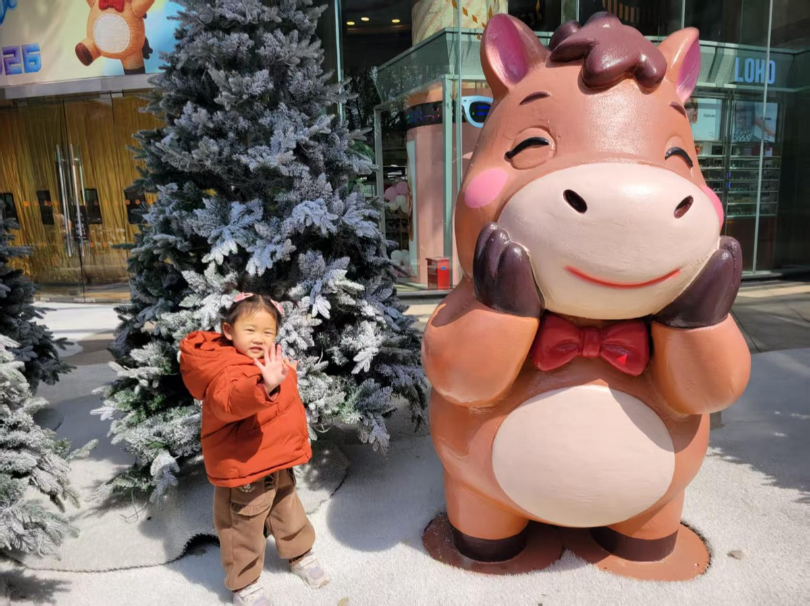

今天给小满洗了冷水澡。出乎意料的是——她根本没哭。而且洗完之后出来，哼着小调，心情很好。
“洗完冷水澡之后，人会不自觉地哼起小调。” —— 纳瓦尔·拉吉坎特（Naval Ravikant）
这个场景和纳瓦尔在书里提到的完全一致：冷水澡带来的不是痛苦后的沮丧，而是某种清冽的愉悦感。这是一种克服挑战后的内在轻快。
观察与思考
- 小满对冷水澡的接受度比预期高。
- 意志力训练的关键是开始，而不是忍耐。

今天给小满洗了冷水澡。出乎意料的是——她根本没哭。而且洗完之后出来，哼着小调，心情很好。
“洗完冷水澡之后，人会不自觉地哼起小调。” —— 纳瓦尔·拉吉坎特（Naval Ravikant）
这个场景和纳瓦尔在书里提到的完全一致：冷水澡带来的不是痛苦后的沮丧，而是某种清冽的愉悦感。这是一种克服挑战后的内在轻快。